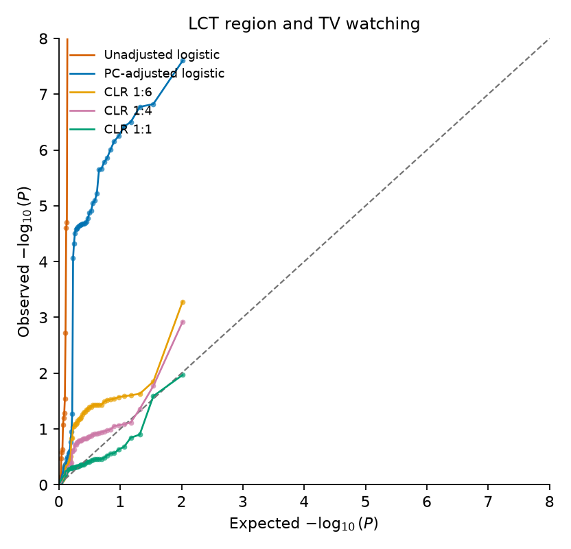
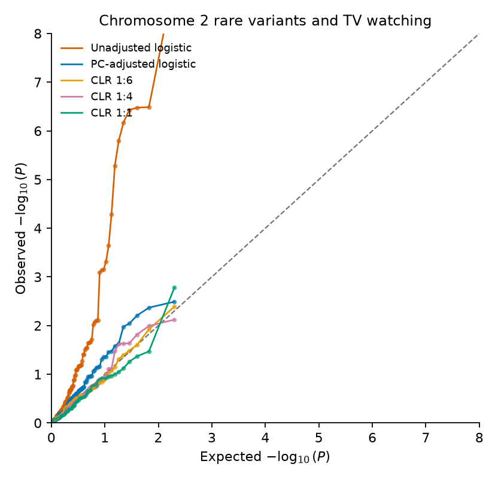
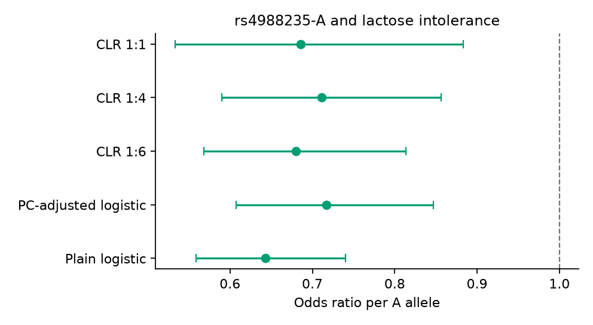
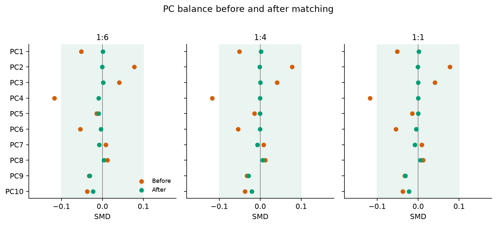
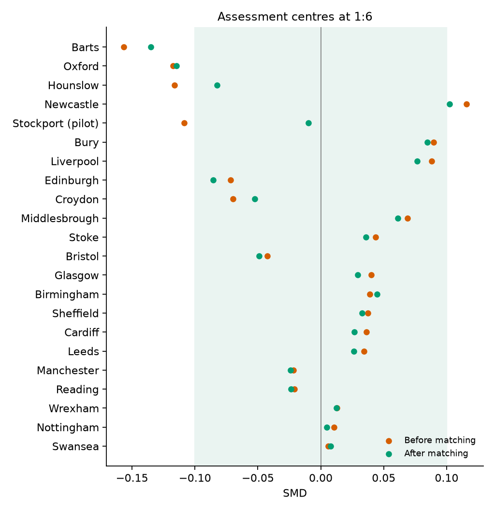
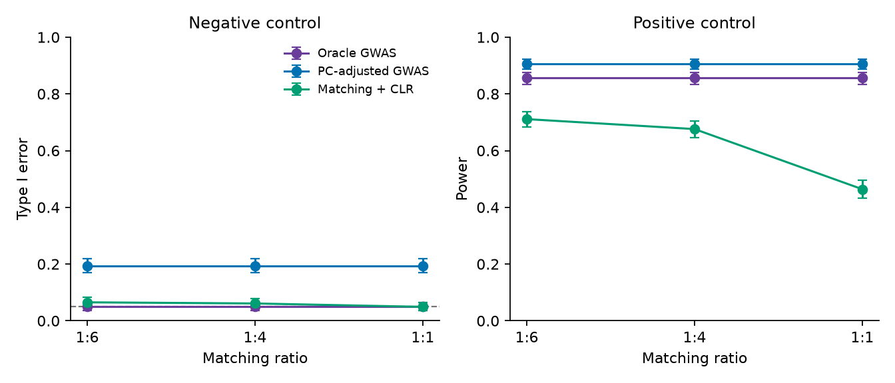

rare-variants
Scripts and summary tables for the analyses reported in the paper. Individual-level UK Biobank data are not included. The study used application 98032. The figures below are rebuilt from the deposited files in summary/.
UK Biobank negative and positive controls

LCT region variants and TV watching. Unadjusted logistic regression is truncated at 8 on the observed axis.

100 rare variants from chromosome 2 and TV watching.

rs4988235-A and lactose intolerance. Points are odds ratios per A allele with 95% confidence intervals.
Balance after matching

Standardized mean differences for PC1 through PC10. PC1 through PC5 were used in matching. The shaded interval is |SMD| < 0.1.

Assessment-centre SMDs at 1:6. Assessment centre was not used to construct the matches.
Simulation

1,000 replicates of 50,000 individuals. Error bars are 95% Wilson intervals. The dashed line in the left panel is 0.05.
Rscript simulation/revised_oracle_matching_simulation.R --calibrated --n-pcs=5 --n-iter=1000 --N=50000 --max-matched-cases=2500
UK Biobank files
Approved researchers can place the files listed in data/README.md and rerun the numbered scripts under analysis/00_CLR/.